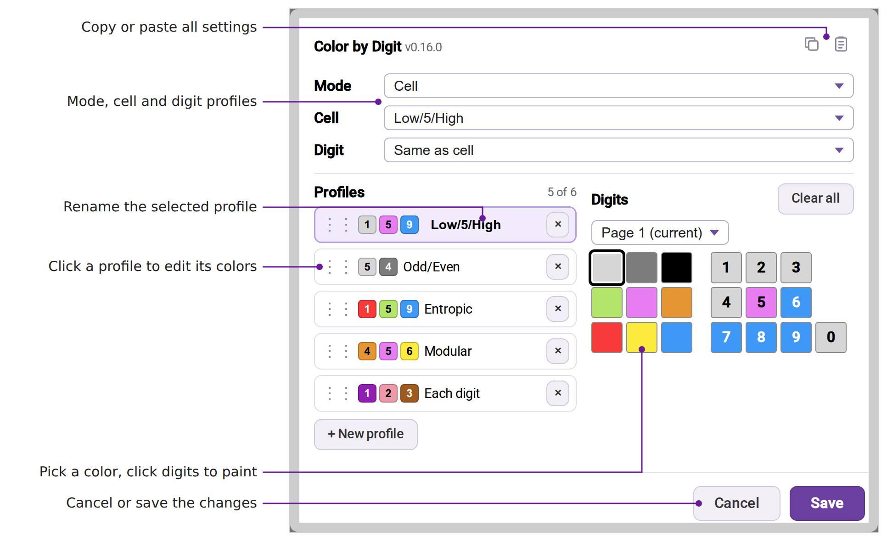

This script can break at any time. It relies on SudokuPad's internals, which any update can change, and it isn't made or supported by SudokuPad.
A button that colors cells, or the digits and marks in them, by groups of digits you choose, and keeps the colors in step as you solve.
A press on the button steps Cell, Digit, Both and Off.
A cell whose digit, or every center mark, falls in one group takes that group's color, and loses it when that changes.
In Digit and Both, digits and marks take a darker shade of their group's color. A conflicting mark gets a small red circle.
Up to six sets of groups. Five come preloaded: Low/5/High, Odd/Even, Entropic, Modular and Each digit.
Opens from the arrow on the button, a right click or a hold. A pick takes effect at once.
Color the cells from one profile and the digits from another, or turn digit coloring off.
Open it with Edit profiles in the profile menu.
